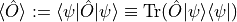
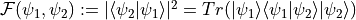
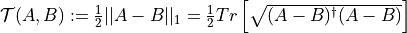
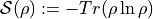
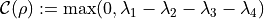

Basic Functions (quanguru.QuantumToolbox.functions)¶
Contains functions to calculate some basic quantities, such as expectations, fidelities, entropy etc.
Functions¶
|
Calculates the expectation value  of an operator |
|
Calculates fidelity  between two pure states. |
|
Calculates the trace distance  between two matrices. |
|
Calculates the entropy  of a given density matrix :math`rho`. |
|
Calculates the concurrence  of two qubit state |
|
Calculates eigenvalues and eigenvectors of a given matrix and sorts them. |
|
Calculates expectation values of an operator for a list/matrix of ket (column) states by matrix multiplication. |
Function Name |
Docstrings |
Examples |
Unit Tests |
Tutorials |
|---|---|---|---|---|
expectation |
✅ |
✅ |
✅ |
❌ |
fidelityPure |
✅ |
✅ |
✅ |
❌ |
_fidelityTest |
❌ |
❌ |
❌ |
❌ |
entropy |
✅ |
✅ |
✅ |
❌ |
traceDistance |
✅ |
✅ |
✅ |
❌ |
sortedEigens |
✅ |
✅ |
❌ |
❌ |
concurrence |
✅ |
✅ |
✅ |
❌ |
_expectationColArr |
✅ |
✅ |
❌ |
❌ |
standardDev |
❌ |
❌ |
❌ |
❌ |
spectralNorm |
❌ |
❌ |
❌ |
❌ |
- expectation(operator: Union[scipy.sparse._base.spmatrix, numpy.ndarray], state: Union[scipy.sparse._base.spmatrix, numpy.ndarray]) float[source]¶
Calculates the expectation value
 of an operator
of an operator  for a given state .
for a given state .State can either be a ket or density matrix. State and operator can both be sparse or array or any combination of the two.
Calculates the
densityMatrix, then usestrace.Operator has to be the matrix (sparse or not), cannot pass a reference to operator function from the toolbox.
- Parameters
operator (Matrix) – an operator as a matrix
state (Matrix) – a quantum state
- Returns
expectation value of the operator for the state
- Return type
float
Examples
>>> ket = basis(dimension=2, state=1) >>> expectation(operator=sigmaz(), state=ket) -1 >>> denMat = densityMatrix(ket) >>> expectation(sigmaz(), denMat) -1
>>> ket1 = basis(dimension=2, state=0) >>> expectation(operator=sigmaz(), state=ket1) 1 >>> denMat1 = densityMatrix(ket1) >>> expectation(operator=sigmaz(), state=denMat1) 1
>>> ket2 = np.sqrt(0.5)*basis(dimension=2, state=1) + np.sqrt(0.5)*basis(dimension=2, state=0) >>> expectation(operator=sigmaz(), state=ket2) 0 >>> denMat2 = densityMatrix(ket2) >>> expectation(operator=sigmaz(), state=denMat2) 0
- fidelityPure(state1: Union[scipy.sparse._base.spmatrix, numpy.ndarray], state2: Union[scipy.sparse._base.spmatrix, numpy.ndarray]) float[source]¶
Calculates fidelity between two pure states.
States can either be a ket or density matrix, and they can both be sparse or array or any combination of the two.
- Parameters
state1 (Matrix) – ket state or density matrix
state2 (Matrix) – ket state or density matrix
- Returns
fidelity between any two states
- Return type
float
Examples
>>> import numpy as np >>> ket0 = basis(dimension=2, state=1) >>> ket1 = basis(dimension=2, state=0) >>> ket2 = np.sqrt(0.5)*basis(dimension=2, state=1) + np.sqrt(0.5)*basis(dimension=2, state=0) >>> fidelity(state1=ket0, state2=ket1) 0. >>> fidelity(state1=ket0, state2=ket2) 0.5 >>> fidelity(state1=ket1, state2=ket2) 0.5 >>> denMat0 = densityMatrix(ket0) >>> denMat1 = densityMatrix(ket1) >>> denMat2 = densityMatrix(ket2) >>> fidelity(state1=denMat0, state2=denMat1) 0 >>> fidelity(state1=denMat0, state2=denMat2) 0.5 >>> fidelity(state1=denMat1, state2=denMat2) 0.5
- _fidelityTest(state1: Union[scipy.sparse._base.spmatrix, numpy.ndarray], state2: Union[scipy.sparse._base.spmatrix, numpy.ndarray]) float[source]¶
Calculates fidelity
- entropy(densMat: Union[scipy.sparse._base.spmatrix, numpy.ndarray], base2: bool = False) float[source]¶
Calculates the entropy of a given density matrix :math`rho`.
Input has to be a density matrix by definition, but works with a given ket state as well. Uses exponential basis as default.
- Parameters
densMat (Matrix) – a density matrix
base2 (bool) – option to calculate in base 2
- Returns
the entropy of the given density matrix
- Return type
float
Examples
>>> compositeStateKet = compositeState(dimensions=[2, 2], excitations=[0,1], sparse=True) >>> entropyKet(compositeStateKet) -0.0 >>> compositeStateMat = densityMatrix(compositeStateKet) >>> entropy(compositeStateMat) -0.0 >>> stateFirstSystem = partialTrace(keep=[0], dims=[2, 2], state=compositeStateKet) >>> entropy(stateFirstSystem) -0.0 >>> stateSecondSystem = partialTrace(keep=[1], dims=[2, 2], state=compositeStateKet) >>> entropy(stateSecondSystem) -0.0
>>> entangledKet = normalise(compositeState(dimensions=[2, 2], excitations=[0,1], sparse=True) + compositeState(dimensions=[2, 2], excitations=[1,0], sparse=True)) >>> entropyKet(entangledKet) 2.2204460492503126e-16 >>> entangledMat = densityMatrix(entangledKet) >>> entropy(entangledMat) 2.2204460492503126e-16 >>> stateFirstSystemEntangled = partialTrace(keep=[0], dims=[2, 2], state=entangledKet) >>> entropy(stateFirstSystemEntangled) 0.6931471805599454 >>> stateSecondSystemEntangled = partialTrace(keep=[1], dims=[2, 2], state=entangledMat) >>> entropy(stateSecondSystemEntangled) 0.6931471805599454
- traceDistance(A: Union[scipy.sparse._base.spmatrix, numpy.ndarray], B: Union[scipy.sparse._base.spmatrix, numpy.ndarray]) float[source]¶
Calculates the trace distance between two matrices.
# TODO implement a method for trace norm
- Parameters
A (Matrix) – density matrix
B (Matrix) – density matrix
- Returns
return – Trace distance between A and B
- Return type
float
Examples
>>> PhiPlus = qt.densityMatrix(qt.BellStates('Phi+')) >>> qt.traceDistance(PhiPlus, PhiPlus) 0.0 >>> PhiMinus = qt.densityMatrix(qt.BellStates('Phi-')) >>> qt.traceDistance(PhiPlus, PhiMinus) 1.0 >>> fourZero = qt.densityMatrix(qt.basis(4, 0)) >>> qt.traceDistance(PhiPlus, fourOne) 0.7071067811865475
- sortedEigens(Mat: Union[scipy.sparse._base.spmatrix, numpy.ndarray], mag: bool = False) Tuple[List[float], List[numpy.ndarray]][source]¶
Calculates eigenvalues and eigenvectors of a given matrix and sorts them.
If mag is True, sort is accordingly with the magnitude of the eigenvalues.
- Parameters
Mat (Matrix) – a Matrix
- Returns
sorted eigenvalues and eigenvectors
- Return type
Tuple[floatList, List[ndarray]]
Examples
>>> ham = qOperators.Jx(j=6) >>> eigVals, eigVecs = sortedEigens(ham) >>> print(eigVals) [-2.5+0.j -1.5+0.j -0.5+0.j 0.5+0.j 1.5+0.j 2.5+0.j] >>> print(eigVecs) [[ 0.1767767 0.39528471 0.55901699 0.55901699 -0.39528471 -0.1767767 ] [-0.39528471 -0.53033009 -0.25 0.25 -0.53033009 -0.39528471] [ 0.55901699 0.25 -0.35355339 -0.35355339 -0.25 -0.55901699] [-0.55901699 0.25 0.35355339 -0.35355339 0.25 -0.55901699] [ 0.39528471 -0.53033009 0.25 0.25 0.53033009 -0.39528471] [-0.1767767 0.39528471 -0.55901699 0.55901699 0.39528471 -0.1767767 ]]
- concurrence(state: Union[scipy.sparse._base.spmatrix, numpy.ndarray]) float[source]¶
Calculates the concurrence of two qubit state
 , where are sorted eigenvalues
with
.
, where are sorted eigenvalues
with
.Works both with ket states and density matrices.
- Parameters
state (Matrix) – two qubit state
- Returns
concurrence of the state
- Return type
float
Examples
>>> PhiPlus = qt.densityMatrix(qt.BellStates('Phi+')) >>> qt.concurrence(PhiPlus) 1.0 >>> PhiMinus = qt.densityMatrix(qt.BellStates('Phi-')) >>> qt.concurrence(PhiMinus) 1.0 >>> fourZero = qt.densityMatrix(qt.basis(4, 0)) >>> qt.concurrence(fourZero) 0.0
- _expectationColArr(operator: Union[scipy.sparse._base.spmatrix, numpy.ndarray], states: numpy.ndarray) List[float][source]¶
Calculates expectation values of an operator for a list/matrix of ket (column) states by matrix multiplication.
The list here is effectively a matrix whose columns are ket states for which we want the expectation values. For example, the eigenstates obtained from eigenvalue calculations of numpy or scipy are this form. TODO introduced to be used with eigenvectors, needs to be tested for non-mutually orthogonal states. So, it relies on states being orthonormal, if not there will be off-diagonal elements in the resultant matrix, but still the diagonal elements are the expectation values, meaning it should work!
- Parameters
operator (Matrix) – matrix of a Hermitian operator
states (ndarray) – ket states as the columns in the input matrix
- Returns
list of expectation values of the operator for a matrix of ket states
- Return type
floatList
Examples
>>> import quanguru.QuantumToolbox.operators as qOperators >>> ham = qOperators.sigmaz(sparse=False) >>> eigVals, eigVecs = np.linalg.eig(ham) >>> sz = qOperators.sigmaz() >>> expectationColArr(sz, eigVecs) [ 1. -1.]
>>> sx = qOperators.sigmax() >>> expectationColArr(sx, eigVecs) [0. 0.]